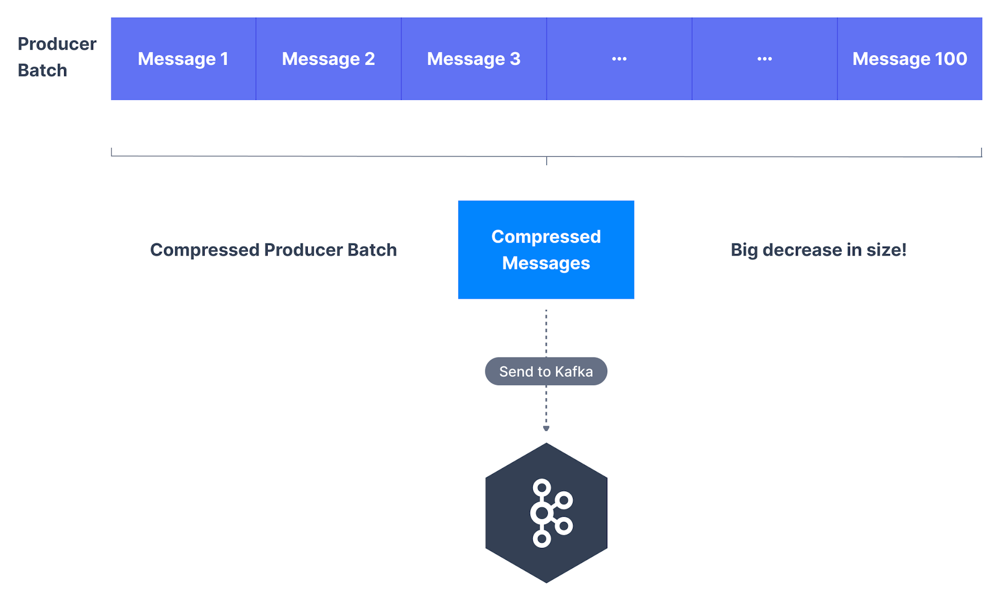

2. Producer Side
-
无需在broker或消费者中进行配置更改，生产者可设置compression.type来压缩消息；
-
压缩类型选项：none，gzip，lz4，snappy，zstd；
-
若已启用，则由生产者客户端执行压缩；
-
若producer batch msg together(高吞吐)，这特有效率particularly efficient；
3. Broker Side
-
也称Topic Level，若目标主题(destination topic)的压缩编码器
compression codec设置为compression.type=producer； -
则broker从客户端获取压缩的批次，并将其直接写入主题的日志文件，而无需重新压缩数据；
-
默认主题压缩定义为compression.type=producer；
-
若主题有自己的设置，如lz4，且该值与生产者设置匹配，则消息批次按原样
写入日志文件，否则broker将解压缩消息，并将其重新压缩为其配置的格式；
4. Producer Level
-
生产者在发送前将消息分组为一批次(group msg in batch)，可节省network trip；
-
若生产者正在发送压缩消息，则单个生产者批次中的所有消息都会压缩在一起，
并作为wrapper msg或value发送，发送到Kafka的消息越大，压缩就越有效；

-
通过启用压缩，可减少网络利用率和存储，通常是向Kafka发送消息时的瓶颈，压缩批次的有点：
-
更小的生产者请求大小，压缩比达4倍；
-
更快通过网络传输数据，更低的延迟；
-
更高的吞吐量；
-
更好的磁盘利用率，磁盘存储的消息更小；
-
-
但压缩涉及压缩和解压缩，CPU资源开销(overhead)较小；
-
producer must commit CPU cycle to compression；
-
consumer must commit CPU cycle to decompression；
-